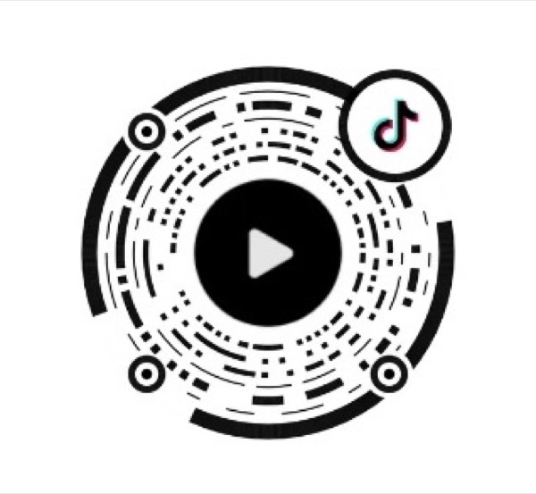

VISUAL ARCHIVE · 02
海报、折页与舞台，
是我把想法变成现场的三种方式。
从平面传播到信息组织，再到音乐、背景视频与演员共同完成的舞台呈现，这里记录了三类不同的创作结果。
POSTER STACK · 海报档案
每一场活动，
都有独一无二的体验。
同一套社团活动，在不同时间、主题和情绪里长出了不同的视觉表达。点击海报，逐张翻看。
01 / 08
BROCHURE STACK · 三折页
把社团的信息，
折进一张纸里。
两套三折页的正反面，从社团介绍到舞种说明，都在限定版面里建立清晰的阅读秩序。
01 / 04
STAGE STACK · 舞台呈现
音乐、影像与身体，
最后在舞台上汇合。
我参与导演，并完成音乐剪辑与舞台背景视频。这组现场照记录了从灯光、群像调度到屏幕内容的最终呈现。
导演音乐剪辑背景视频
01 / 10
